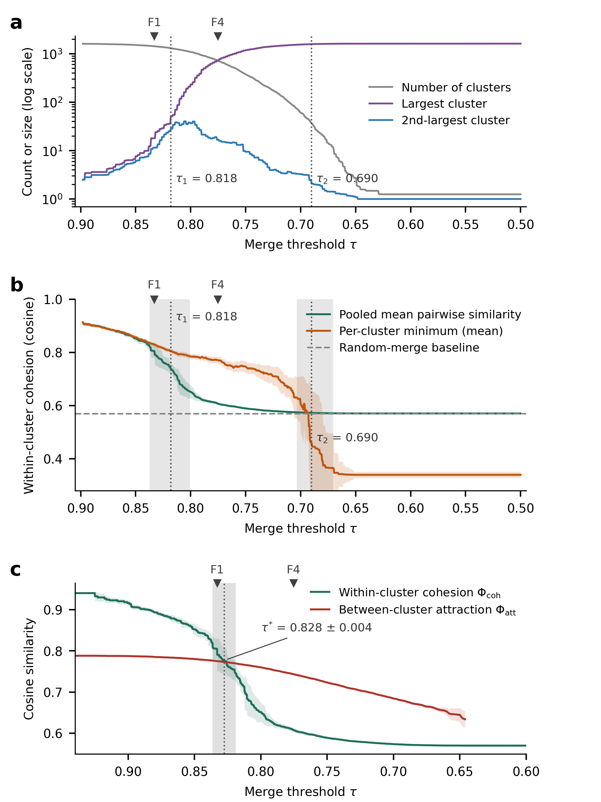
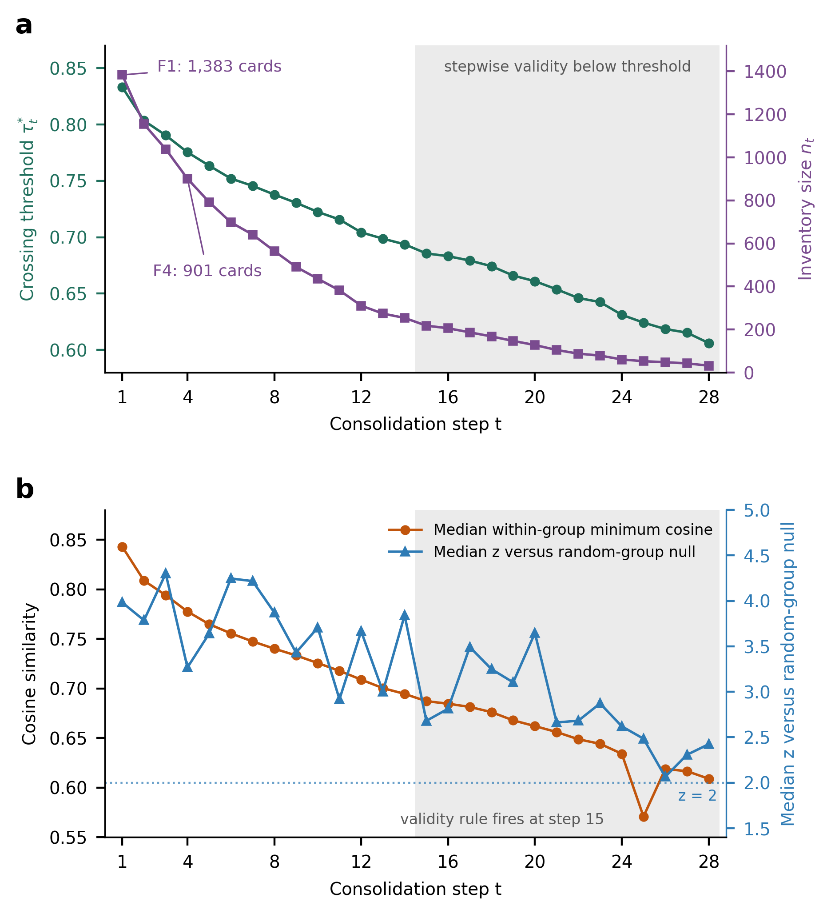
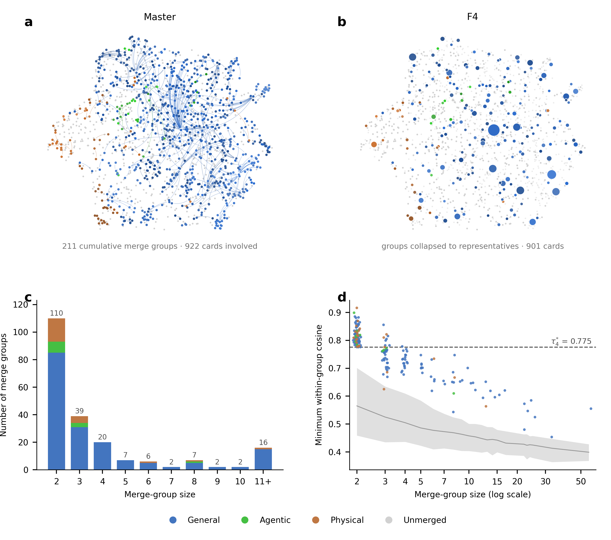

What we found
Large AI risk taxonomies accumulate semantic duplicates as they integrate heterogeneous literature, and the merge threshold that fixes their leaf-level granularity has conventionally been set by analyst judgment ("0.8 seems reasonable"). This project shows that the threshold is a quantity to be measured, not chosen. Sweeping a similarity-threshold graph over 1,612 risk cards embedded in a multilingual sentence-embedding space reveals two percolation-like transitions that bound a fidelity-oriented and a compression-oriented operating regime, and an independent criterion borrowed from evolutionary biology's cohesion species concept — the last point at which within-cluster cohesion exceeds between-cluster attraction (the crossing, τ* = 0.833) — selects the same boundary.
Merging at the crossing changes the density of the space, and the boundary moves with it. Iterating merge → re-derive → repeat generates a granularity flow: twenty-eight consolidations carry the inventory from 1,612 down to 32 cards, each step passing a per-iteration random-group null until a stepwise validity rule fires at step 15 and delimits the admissible range by itself. The released tiers (F1: 1,383 cards; F4: 901 cards; F5: 792 cards) are snapshots of this trajectory. Repeating the analysis with an entirely different embedding model selects essentially the same granularity — granularity is a property of the inventory, not of the embedding scale.
Core concepts
| Term | Definition |
|---|---|
| Fidelity | The degree to which the distinctions drawn by the source inventory survive consolidation: high when no two genuinely different risks end up in one card. |
| Compression | The degree to which repeated descriptions of one risk are absorbed into a single representative card, measured as the reduction in card count. |
| Within-cluster cohesion Φcoh |
The mean cosine similarity over all card pairs placed in the same cluster: how alike the items we have decided to treat as one actually are. |
| Between-cluster attraction Φatt |
The mean, over clusters, of the highest similarity to any card outside the cluster: how hard the space outside the boundary pulls for a further merge. |
Fidelity and compression are the two ends of one axis: lowering τ buys compression at the cost of fidelity. The crossing τ* is the greatest compression available without surrendering fidelity. Attraction is an extreme-value statistic rather than an average because merge judgements fail at the nearest neighbour, not the typical one, which makes Φcoh ≥ Φatt a conservative condition.
Key figures



The procedure
- Embed every card and build the threshold graph G(τ): an edge whenever cosine similarity reaches τ, so connected components are the merge clusters.
- Sweep τ downward on a 10−4 grid and record the gap Δ(τ) = Φcoh(τ) − Φatt(τ), averaged over 1,000 subsamples at 80% of cards.
- Take τ* as the smallest τ with Δ(τ) ≥ 0, the last boundary at which the inside still beats the outside.
- Merge the components of G(τ*), keeping each cluster's medoid, which is an original card rather than a synthesized summary.
- Score every merge group against size-matched random groups on the same inventory. If fewer than 90% of groups exceed the null by two standard deviations, stop; this first happens at step 15.
- Otherwise return to step 2 on the merged inventory, whose density, and therefore whose boundary, has changed. The emitted states are the tiers.
Released tiers
| Tier | τ* | Cards | Absorbed | G / A / P | Role |
|---|---|---|---|---|---|
| Master | – | 1,612 | – | 1,154 / 155 / 303 | canonical inventory |
| F1 | 0.8329 | 1,383 | 229 | 906 / 140 / 337 | fidelity tier (the crossing) · released for human audit |
| F2 | 0.8033 | 1,154 | 458 | 734 / 128 / 292 | second consolidation |
| F3 | 0.7903 | 1,038 | 574 | 653 / 112 / 273 | third consolidation |
| F4 | 0.7753 | 901 | 711 | 568 / 92 / 241 | compression tier · released for human audit |
| F5 | 0.7634 | 792 | 820 | 491 / 83 / 218 | extended compression tier · released for human audit |
Absorbed cards are cumulative from the Master inventory. Domain counts follow the EM re-assignment; F2, F3 and F5 inherit theirs from the representative of each merge group. The Societal Safety axis is one concept family applied at three scopes, so its cards are counted under General, Agentic or Physical (RAI3-{G|A|P}-SOC-nn share the same numbering and meaning).
Cross-corpus replication
The same pipeline, with nothing retuned, applied to the public MIT AI Risk Repository (database v4, 74 frameworks). Both transitions, the crossing, and a null-valid five-step flow reproduce, at corpus-specific threshold locations.
| Tier | τ* | Entries | Absorbed | Median z | Role |
|---|---|---|---|---|---|
| Source | – | 1,810 | – | – | repository inventory |
| M1 | 0.8190 | 1,423 | 387 | 4.79 | fidelity tier (the crossing) |
| M2 | 0.7908 | 1,230 | 580 | 3.68 | second consolidation |
| M3 | 0.7696 | 1,022 | 788 | 3.53 | third consolidation |
| M4 | 0.7545 | 879 | 931 | 3.17 | compression tier |
| M5 | 0.7374 | 727 | 1,083 | 3.00 | extended compression tier |
Transitions on this corpus sit at τ1 = 0.806 ± 0.004 and τ2 = 0.629 ± 0.009 over 100 subsample replicates. Every step clears the validity rule, with at least 98.9% of merge groups above the null by two standard deviations. Four of the ten closest pairs in this repository are verbatim duplicates carried in from different source papers, which is the redundancy the crossing removes first.
Interactive materials
Methods in brief
- Threshold graph: connect card pairs with cosine similarity ≥ τ; connected components are merge clusters (equivalent to single-linkage clustering).
- Two transitions: event-driven sweep on a 0.0001 grid with 1,000 subsample replicates — τ₁ = 0.818 ± 0.010 (chaining onset), τ₂ = 0.690 ± 0.009 (worst-case collapse).
- Crossing criterion: the smallest τ at which cohesion still reaches attraction. It reads an order relation rather than an absolute scale, which is why the identical line of code returns 0.8329 here and 0.8190 on the MIT repository.
- Flow: merge at the crossing, re-derive, repeat. Every step is scored against a size-matched random-group null on its own inventory (median z ≈ 3.0–5.4 within the admissible range).
- Density dependence: τ* ≈ 0.576 + 0.035 ln n, roughly +0.024 per doubling of the inventory, which is why the boundary has to be re-measured after every merge.
This is the public project page for a manuscript currently under submission. The full text will be released upon publication; this repository contains the analysis code and derived artifacts only (figures, audit pages, flow-state archives). Contact: ys.chun@kt.com